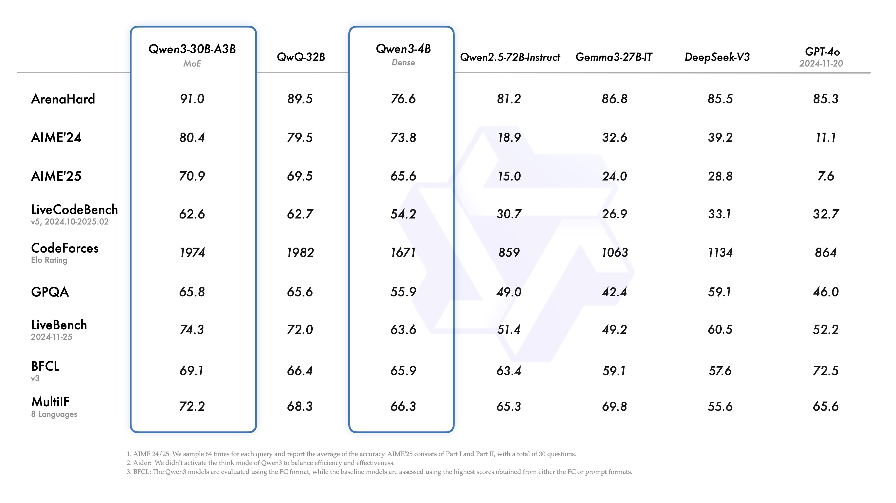

Qwen3 到底值不值得掏钱？一份冷静的付费决策账本
Qwen3 模型本身开源免费，但云端 API 计费、本地显卡投入、企业版服务——每一分钱花在哪、值不值？分轻度、主力、重度三类用户算清楚。
开头抛问题
我去年把 API 账单拉出来看了一眼，单月花了八百多。那天晚上我盯着账单琢磨了半小时：Qwen3 到底值不值得我掏钱？
这个问题听上去简单，但答案没那么直接。因为 Qwen3官网 介绍得很清楚，这货是个"夹心糖"——模型本身开源免费，你可以下载权重本地跑；但云端 API 按量计费，你省心就得花钱；如果要企业级服务，又有另一档报价。免费版给什么、付费版多什么，每个档位的钱花得值不值？这篇文章就把这笔账掰扯清楚。
定价拆解：免费版给什么，付费版多什么
先把底牌亮出来。
本地模型权重——完全免费。 Qwen3 全系列（从 0.6B 到 235B）都在 Hugging Face 上开源，Apache 2.0 协议，个人用、商用都行。你从 下载 拿权重，用 Ollama 一键启动，或者用 vLLM、SGLang 部署，一分钱不用花。唯一的门槛是显卡——8B 模型至少要 16GB 显存，32B 要 40GB，235B MoE 要多卡并行。
云端 API（阿里云百炼）——按量计费。 这部分的定价挺鸡贼，分模型档位：
- qwen3-flash：最便宜，适合低延迟场景，约 0.4 元/百万输入 token、1.6 元/百万输出 token
- qwen3-plus：中间档，能力更强，约 2.0 元/百万输入、8.0 元/百万输出
- qwen3-max：旗舰版，默认自动思考，约 4.0 元/百万输入、16.0 元/百万输出
- 多模态模型（qwen3-vl-plus/flash）：按图像张数额外计费
注意这只是公开价。百炼经常有新用户赠送额度、活动折扣，实际成本可能更低，但长期稳定使用还是按原价算。
免费额度——新用户有。 注册百炼新账号，一般送几百万 token 的免费额度，够你玩一两周。用完了就得付费。
有没有隐藏消费？有一个——思考模式的 token 消耗。qwen3-max 默认自动思考，思考过程本身也算 token，而且输出 token 往往是思考链的 2~3 倍。你调一个复杂问题，可能花掉的 token 是关闭思考时的 4~5 倍。这是计费里最容易被忽略的坑。

算账：三类用户的账本
我把用户分成三类，你对照自己对号入座。
轻度用户：每月调用不超过 10 万 token
画像：偶尔写个脚本、调调 API 玩玩，或者给个人博客搭个简单的问答机器人。一天也就调用几十次，每次几十到几百 token。
免费版够不够？ 完全够。新用户赠送的额度就能用好几个月，用完了换个新注册的小号继续薅——虽然不太地道，但技术上可行。如果不想薅羊毛，每月 10 万 token 按 qwen3-flash 算也就几分钱，一杯奶茶钱用半年。
付费值不值？ 不值。这个强度下，百炼的付费和免费额度差异对你来说没意义。真要长期用，哪怕每月自己掏腰包，也就几块钱的事，犯不上纠结。
主力用户：每月 100 万 ~ 1000 万 token
画像：有正经业务在跑——可能是给客户做的 AI 客服、公司内部的文档助手、或者你自己的产品已经在小范围商用。每天稳定有几千次调用，开始关心成本了。
免费版够不够？ 不够。新用户额度撑不了一周，必须付费。
每单位时间成本多少？ 按 qwen3-plus 算，500 万 token 每月大约 50~100 块（输入输出各一半的话）。如果用 qwen3-max 开思考模式，可能翻到 200~400 块。本地部署的话，一张 4090（24GB）跑 qwen3-8B，电费每月大概 30~50 块，但需要你有技术能力部署和维护。
这里有个关键抉择：云端省心但持续花钱，本地省电费但前期投入（显卡 + 运维时间）大。我自己的经验是，如果你已经有空闲显卡，本地部署 qwen3-8B 或 32B-AWQ 量化版，体验和云端 qwen3-plus 差不多，但长期成本低得多。如果没显卡，云端按量付费是更灵活的选择——毕竟你不需要为高峰时段的流量峰值买一堆显卡。
重度用户：每月 1000 万 token 以上
画像：AI 产品成了——日活几千上万，调用量稳定在每月几千万甚至上亿 token。成本开始变成一个需要专门人盯的数字。
免费版？别想了。 这个量级下，免费额度连零头都不够。
每单位时间成本多少？ 按每月 5000 万 token 算，qwen3-plus 大约 500~1000 块，qwen3-max 可能 2000~4000 块。但如果你有 GPU 集群，本地部署的边际成本几乎为零——电费加运维，5000 万 token 的成本可能只有云端的 1/10 甚至更低。
重度用户的核心问题不是"值不值"，而是"怎么省钱"。 优化空间很大，具体参数和技术细节去 qwen3文档 翻：关闭不必要的思考模式、把简单请求路由到 qwen3-flash、批量推理、vLLM PagedAttention 提升吞吐、AWQ/GPTQ 量化降低显存占用……这些每一项都能砍掉 20%~50% 的成本。我见过一个朋友把每月 8000 万 token 的账单从 6000 块砍到了 800 块，靠的就是把 qwen3-max 的思考模式从"默认全开"改成"按问题类型自动判断"。
替代方案：不付这笔钱还有什么路
坦白说，Qwen3 不是唯一选择，甚至不一定是最便宜的选择。
同价位替代：DeepSeek-V3 开源，性能和 qwen3-plus 接近，云端 API 价格大约是 qwen3-plus 的一半。如果你只关心性价比，DeepSeek 可能更划算。Llama 3.1 也开源了 70B 版本，本地部署选项更多。
免费路线：完全不用付费，几个思路——
- 自己有显卡：下载 Ollama，跑 qwen3-8B 或 32B-AWQ，零成本
- 没显卡但量小：新账号薅百炼赠送额度，用完一个换一个
- 没显卡但量不小：考虑申请阿里云的 AI 应用加速器，有些项目能拿到免费额度
降低使用频率的代价：如果把调用量砍掉一半能省一半钱，但业务还能不能跑得通？这个得自己算——我试过把客服机器人的回复从"每次都调 qwen3-max"改成"先查 FAQ，FAQ 没有才调 qwen3-plus"，调用量砍了 60%，用户体验几乎没差别。

结论：谁该付，谁该等，谁永远不用付
最后给一个可执行的结论。
闭眼付的：你有正经业务在跑、每月至少 100 万 token、自己又没显卡的——百炼按量付费是最省心的选择，别纠结了。如果你是重度用户且有 GPU 集群，优先本地部署，云端作为兜底。
再等等的：你正在犹豫要不要做 AI 产品、还在 MVP 阶段——先用免费额度和本地部署验证想法，等真有了稳定流量再考虑付费。云厂商的价格战还在打，下个月可能又降了。
永远不用付的：轻度用户、个人开发者、只是想玩玩的——下载 Ollama，本地跑 qwen3-8B，够用了。把省下来的钱买张好显卡，比给云厂商交月费强。
我自己现在的状态是主力用户偏上：qwen3-plus 云端 API 每月 300 多万 token，再加一张 4090 本地跑 qwen3-32B-AWQ 处理批量任务。云端负责实时交互，本地负责批量推理，两边各取所长。这样算下来每月总成本大概 150 块，比纯云端省了一半多。
这就是付费决策账本的意义——不是"付不付"，而是"怎么付最划算"。
阿里云百炼的文档维护得挺勤快，模型更新和 API 变动都能及时查到；Hugging Face 上的开源权重随时可下，商用协议也没什么限制。我自己在整理这套资料的时候顺手做了三镜像，GitHub 主站稳定，Gitee 和 GitCode 对国内访问更友好，各取所需。